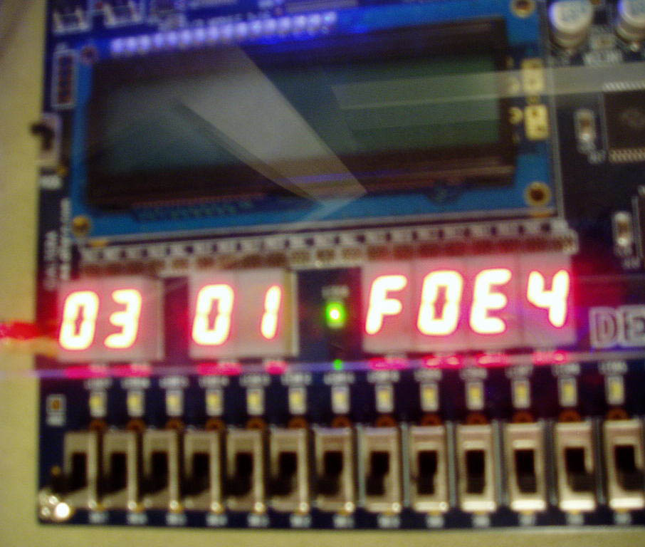

Light Source Motion Tracking
Ping-Hong Lu (pl328)
The main goal of this project was to accurately detect motion and report the speed of moving light sources in the view of a camera. One can easily imagine many uses for such a device. For example, a night-vision goggle that sees certain light spectrums and is able to detect enemy motion in real-time. The project was implemented on an Altera DE2 development board with a Nios II CPU instantiated in hardware, along with a Terasic TRDB_DC2 1.3 Megapixel camera, speakers, and a VGA monitor. The development was done using the Quartus II IDE and the NIOS II IDE. The image capturing and filtering were implemented in hardware, while the position and vector calculations were done in the Nios II CPU.
The motion tracker relies on a CCD camera capable of a 640 x 480 resolution that stores the captured data in SDRAM. After the data is read and some threshold filtering is applied, and the resulting image is in black and white. This is highly desireable for ease of image processing. The data, along with VGA position information is then sent to the Nios II for pixel position comparison. Once the Nios II has the pertinent information, it calculates the difference between the current input position and the last known position. This difference divided by some time and normalizing constant gives the user the speed. Various methods of I/O are used to communicate results back to the user.
The project was chosen in part because FPGAs seems well suited for the light source motion tracking because many actions can be done extremely fast in hardware and speed and performance is extremely important in this application. The Nios II was thought to be able to handle calculations of speeds at a relatively fast pace, as the CPU is clocked at 50MHZ. Care will have to be taken to avoid math calculations that involve costly operations such as division.
The DE2, CCD camera, speakers, and VGA monitor were set up in the following way and can be seen here:
The hardware was created using the Hardware Description Language, Verilog. Several modules were used in the design including a VGA Controller, a SDRAM Controller, an Audio Digital-to-Analog Converter, an Audio Phase-locked Loop, as well as three shift registers with taps to each bit in the register. In addition, using the SOPC Builder, a Nios II CPU was instantiated on the DE2 board. Module designs not covered in this section are unaltered code samples from Altera, and more information is available on http://www.altera.com, or by looking through the code (see Appendix).
In the main DE2_CCD_Detect module the modules were connected in the following way, as can be seen by the simplified RTL diagram in Figure 1.
Figure 1
As mentioned previously, the main module contains several pieces of hardware that are essential to the image processing and motion detection. First, there is hardware that performs filtering operations on data headed for the VGA controller. This hardware applies a cutoff threshold for values of red, green, and blue, and will translate the pixel to either black or white (or whatever color you prefer) to the VGA controller and the Nios II.
Second, there are three special shift-registers called taps that shift in VGA information every clock cycle. The taps are unique because as their name suggests, they allow the hardware to tap each position of the shift-register to access its bits. The taps were created using the MegaWizard Plug-In Manager in the Quartus II IDE. For more information on how these work see: http://www.altera.com/literature/ug/ug_alt_shift_taps.pdf. The taps are used to perform two morphological image processing techniques called erode and dilate which fade away the foreground and background respectively. The information is then used to compare against the next state of the shift-register and if it can detect whether “change” (motion) has occurred or not. If no motion has been detected, the VGA output address going to the Nios II retains the value from the previous position to avoid updating the Nios II with values of black that the VGA draws.
Also, in the main module, there exists hardware to control the Audio DAC whenever a speed threshold is reached. The audio hardware outputs a beep for 167 milliseconds whenever the threshold is passed. More details on the speed value are in later sections of the design description.
Lastly, a standard Nios II CPU was instantiated in hardware. The Nios II has the following specifications described in Figure 2.
Figure 2
The input values are the VGA x and y coordinates the outputs are a single bit toggling bit, a speed-indicating red LEDs, a speed value, the x and y positions, as well as the LCD interface. The Nios II uses SRAM for instruction memory since the default SDRAM that we have been using in previous labs is now utilized by the CCD camera module. The SRAM driver was provided by Terasic.
The Nios II runs without the μC/os to reduce the overhead time incurred by the scheduler. The program follows a traditional embedded systems program with a tight while loop that performs reads on the incoming inputs of the pixel address of the detected light source. A small padding is applied to the x and y coordinates (20-640 and 20-480 possible) so that static objects that are close to the camera will not be mistaken as being in motion due to the large area they take up in memory. Simple trigonometry is used to calculate the difference between the previous known location of the light source and the current location. The speed is calculated by dividing the pixel position difference by the time taken to iterate once through the while loop. The calculated values are then outputted to the red LEDs and 7-segment displays on the board. While only the speed scalar is displayed, the velocity vector (speed and direction) is known.
The 7-segment display driver which accepts a 32-bit number and outputs a hex number on all 8 available 7-segment displays provided by Altera was slightly modified so that it can output the two different length numbers (3 hex digits for the speed and 2 hex digits for position).
The initial design differed slightly from the one described in section III. For example, the system ran the μC/os operating system. This yielded results that showed accurate position tracking, although some tweaking was required to find the padding value mentioned above. Initially the values were printed to the Nios II IDE via the UART and the LCD screen. The main problem with the initial results was that the performance degraded when movement of the light source occurred. To investigate the cause, a single output bit was implemented that generated a square-wave of periodicity of two iterations through the while loop. The expected behavior was a constant periodic square-wave which was present on the scope when no motion existed. However, when there was activity in front of the camera, the scope showed that large high or low sections existed between the regular square-wave. This not only produced lags in printing out the speeds, but it was also affecting the correctness of the speed calculations as more than the normal iteration time passed. To address this issue, the UART and LCD prints were removed and the values were moved to the hardware. To fit all of the values with the given resources, all values were printed in hexadecimal and were arranged as follows: speed on HEX6-7, X-coordinate on HEX3-5, and Y-coordinate on HEX0-2 (see Figure 3). In this case, the speed = 0x03, x-coordinate = 0x01F, and y-coordinate = 0x0E4. Keep in mind these values are in hexadecimal.

Figure 3
Once this was addressed, the performance improved noticeably. However, other gaps were still present on the oscilloscope which suggested that something else was hurting the performance. That was when it was decided that the μC/os was not necessary and the design was changed to run without an OS. This reduced a periodic 50 μs pause in the square waves which was caused by the scheduler.
The final results were an accurate light source positions with an improved speed reading and overall a fairly responsive performance. New speed readings are updated every 3.1 μs, although sometimes large speeds are not shown on the 7-segment displays at all because 3.1μs is not enough time to register the change in the physical 7-segment LEDs. Also, for large light sources, false motion detection occurs.
Other results are based on the camera limitations, which cause a discontinuity in the output if the object is moved quicker than the ~7 frames-per-second can handle. This occurs for reasonable sized light sources when the object moves about 28 pixel/μs. By rough estimates, a standard sized LED about 4.5 inches away from the camera can move from the edge of one side to the other in about 2.2 seconds without the image dropping out of the display.
The theoretical maximum speed on the system would be a move from position (20,20) to (620,460), which makes no difference to the speed calculator as long as two frames show those positions on back-to-back frames (the calculations are the same for smaller movements as well). In such a case, a non-normalized speed would be 250 pixels/μs. In practice, this was not possible because my hands don't move that fast or accurately.
Lastly, some different results occur based on different conditions. For example, based on the distance from the camera, speed detection of light sources change even though the actual speed stays constant. The perceived size of the light source is also dependent on the distance from the camera.
The light source motion tracker is a good first pass at such a device. Some future works should include dividing the VGA space into smaller sections and having dedicated processing units in charge of each sub-section. The foreseeable bottleneck in this activity is the FIFO nature of the SDRAM implementation, and perhaps a parallel memory access device would be needed. Ultimately, the limiting factor would be the rate of pixel input from the CCD camera, but with 640 x 480 running at 25MHz (CCD_MCLK), full frames are received every 123 milliseconds which seems like it may not be fast enough for the human eye. Another natural extension to the space division idea is to track multiple objects’ velocities. This could serve as the basic input to a game, for example.
One activity that could be very rewarding is to change the resolution of the camera. Depending on the new resolution, this could speed up the frames-per-second count significantly. For example, a game that is played on a "table" that is narrow but long could reduce the resolution to 640 by 240, which would in turn double the frame count.
One must remember that the speed detection is the perceived speed from the point of view from the CCD camera. In gaming applications, the camera should be mounted and the movement of light sources should be held on the same place with a fixed height away from the camera.
Perhaps the biggest lesson learned from this project was that “good” performance was not as easy to achieve as first thought. While it seems good enough for the basic motion tracker, real-time embedded systems will likely require much faster and perhaps even more accurate motion detection and velocity calculations (for example, in military applications as discussed previously).
I would like to give special thanks to Altera Corporation for providing many of the learning materials used as building blocks of this project. Also, this project would not have been possible without the insight and suggestions by Dr. Bruce Land.
I feel that this project was a great experience, and that given more time I would pursue the future works mentioned.
The entire project can be found here here.
Altera Corporation, http://www.altera.com
Terasic Technologies, http://www.terasic.com.tw/